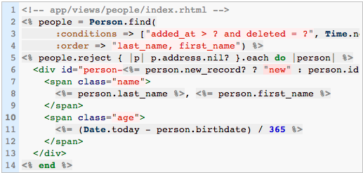

Lean & Mean Domain Objects
despite with Active Record
Todd Kaufman & Jason Karns
January 8, 2013
Todd Kaufman & Jason Karns
January 8, 2013
Fat Views are bad...

Shove it into the controller!
Much better...
# app/controllers/people_controller.rb
class PeopleController < ActionController::Base
def index
@people = Person.find(
:conditions => ["added_at > ? and deleted = ?", Time.now.utc, false],
:order => "last_name, first_name")
@people = @people.reject { |p| p.address.nil? }
end
end
umm...
Fat Controllers are bad!
# app/models/person.rb
class Person < ActiveRecord::Base
def self.find_recent
people = find(
:conditions => ["added_at > ? and deleted = ?", Time.now.utc, false],
:order => "last_name, first_name")
people.reject { |p| p.address.nil? }
end
# ...
end
Shove it into the model!
This is like cleaning your room by shoving all the clothes on the floor under your bed
The mess is still there but it's hidden just out of site
Value Objects
Query Objects
Service Objects
Observer Objects
require 'active_support'
class Address
attr_accessor :street, :zip
end
class Person
attr_accessor :address
delegate :street, :to => :address
delegate :zip, :to => :address, :prefix => true
end
Person.new.street
Person.new.address_zip
require 'forwardable'
class Address
attr_accessor :street, :zip
end
class Person
extend Forwardable
attr_accessor :address
def_delegator :address, :street
def_delegator :address, :zip, :address_zip
end
Person.new.street
Person.new.address_zip
require 'delegate'
class Age < DelegateClass(Fixnum)
def can_drive?
self >= 16
end
def can_vote?
self >= 18
end
def can_drink?
self >= 21
end
end
Age.new(5).can_drive? #=> false
Age.new(2) + 2 #=> 4
class HappyBaby; def speak; "goo ga, goo goo :-)"; end; end
class FussyBaby; def speak; "WAH! WAH WAAHHHH!!"; end; end
class Baby < SimpleDelegator
def initialize
@happy, @fussy = HappyBaby.new, FussyBaby.new
super @happy
end
def change_diaper; __setobj__(@happy); end
def poop; __setobj__(@fussy); end
end
baby = Baby.new
baby.speak #=> "goo ga, goo goo :-)"
baby.poop
baby.speak #=> "WAH! WAH WAAHHHH!!"
baby.change_diaper
baby.speak #=> "goo ga, goo goo :-)"
As your object model grows, scopes can get large
and a little unwieldy
scope :for_rate_contracts, lambda { |rate_contracts|
rate_contracts = Array.wrap(rate_contracts)
unless rate_contracts.empty?
device_conditions = Device.scoped.arel.constraints.inject do |query, clause|
query.and(clause)
end
joins(:device).
joins('LEFT OUTER JOIN rate_addresses AS ras ON (devices.rate_address_id = ras.id)').
joins('LEFT OUTER JOIN rate_contract_devices AS rcds ON (rcds.device_id = devices.id)').
where('(position = 1 AND ras.end_point_1_contract_id IN (:rate_contract_ids)) OR ' +
'(position = 2 AND ras.end_point_2_contract_id IN (:rate_contract_ids)) OR ' +
'(position = 3 AND ras.end_point_3_contract_id IN (:rate_contract_ids)) OR ' +
'(position = 4 AND ras.end_point_4_contract_id IN (:rate_contract_ids)) OR ' +
'(rcds.indirect_control_rate_contract_id IN (:rate_contract_ids))',
:rate_contract_ids => rate_contracts.map(&:id)).
where(device_conditions)
else
#with no rate contracts always return none
where("1 = 0")
end
}
Really freaking big AR models
Especially when your system has God Objects
Big Objects leads to big and difficult specs
Usually lacking in test coverage
Leading to some difficult to find bugs
Default Scopes Kill Kittens!
default_scope :conditions => {:deactivated_at => nil}
Please don't use...
Extract Class when:
You have one class doing work that should be done by two.
Query objects to the rescue!
Scopes can be chained
I like calling Speaker.accepted
Easy to use lifecycle hooks
Easy to use often == widely misused
Quick, list the Create lifecycle hooks in order
The first is before_validation
class User < ActiveRecord::Base
after_save :queue_welcome_email, :on => :create
private
def queue_welcome_email
Resque.enqueue(WelcomeEmailJob, self.id)
end
end
Why does this result in the occassional ActiveRecord::RecordNotFound exception
The rails guide is incorrect.
after_commit is also a hook, executed after after_save
Use it instead of after_save if you are seeing things like message being enqueued before the db has the record
When multiple callbacks on a file, ordering is important
before_validation :setup_c_and_i_data, :unless => :recurring?, :on => :create
after_create :update_selected_control_strategies
after_create :create_triggers, :unless => :template?
after_commit :send_create_email, :unless => Proc.new { | ce | ce.template? || ce.recurring? }, :on => :create
Not all methods on a model provided by AR trigger callbacks (update_all for example)
User.where(:id=>@user.id).update_all(:credits => @user.credits+5)
class UserAuthenticator
def initialize(user)
@user = user
end
def authenticate(unencrypted_password)
return false unless @user
if BCrypt::Password.new(@user.password_digest) == unencrypted_password
@user
else
false
end
end
end
class UserObserver < ActiveRecord::Observer
def after_create(model)
# code to send confirmation email...
end
end
Leverage Active Record Observer
config.active_record.observers = :user_observer
DHH's opinions need not be your own
Aggresssively prune your Active Record models to keep them clean
Favor these types of class extractions, other patterns, and develop your own
@jasonkarns @toddkaufman
class MyClass < ActiveRecord::Base
set_table_name :table_of_my_classes
...
end
# config/initializers/inflections.rb
ActiveSupport::Inflector.inflections do |inflect|
# by default, AS singularizes 'taxes' to 'taxis'
inflect.irregular 'tax', 'taxes'
...
end
"id"class MyClass < ActiveRecord::Base
set_primary_key "seq_id"
...
end
class ActiveRecord::Base
def self.get_primary_key(classname)
"seq_id"
end
end
`gem install composite_primary_keys`
class Person < ActiveRecord::Base
set_primary_keys :first_name, :last_name
end
foreign key must define all columns of the composite key and they must be in order
class Person < ActiveRecord::Base
set_primary_keys :first_name, :last_name
has_many :cars, :foreign_key => [:first_name, :last_name]
...
end
class Car < ActiveRecord::Base
belongs_to :person, :foreign_key => [:first_name, :last_name]
...
endabbreviation only used as foreign keys?
(main class isn't abbreviated)
class Conference < ActiveRecord
has_many :speakers, :foreign_key => :conf_id
has_many :attendees, :foreign_key => :conf_id
# this could go on for a while
...
end
class Speaker < ActiveRecord::Base
belongs_to :conference, :foreign_key => :conf_id
end
class Attendee < ActiveRecord::Base
belongs_to :conference, :foreign_key => :conf_id
end# config/initializers/inflections.rb
ActiveSupport::Inflector.inflections do |inflect|
inflect.foreign_key :conference => :conf_id # requires a monkey-patch
end
class ActiveSupport::Inflector::Inflections
attr_reader :foreign_keys
def foreign_keys
@foreign_keys ||= {}
end
def foreign_key(association_name_to_column_name)
association_name_to_column_name.each do |association_name, column_name|
foreign_keys[association_name.to_s] = column_name.to_s
end
end
end
class Database1Base < ActiveRecord::Base
self.abstract_class = true
establish_connection {:database => "some_db_1", ...}
end
class Model1 < Database1Base
...
end
class Database2Base < ActiveRecord::Base
self.abstract_class = true
establish_connection {:database => "some_db_2", ...}
end
class Model1 < Database2Base
...
end
scope :trust_effective_date_established, where("trust_effective_date is not null")scope :trust_effective_date_not_established, where(:trust_effective_date => nil)
scope :is_waive_override, where(:waive_override => 'Y')scope :flexible_advantage, where(<<-SQL)
seq_id in (SELECT case_seq_id
FROM ppak_contracts
WHERE prod_code in ('C3', 'T3'))
SQLscope :for_participant, lambda { |partic| {:where => "partic_seq_id = #{partic}"} }
# usage
model_selections_for_john = IK::PpakParticModelSelection.for_participant(1357924680)scope :active_as_of, lambda { |asof_date| where("record_start_datetime <= ?", asof_date) }scope :active, lambda { active_as_of(IK::PpakDateCard.first.daily_cycle_to_date) }For schemas that utilize a table name suffix convention
For instance, a pair of tables: orders and orders_audit
class ActiveRecord::Reflection::AssociationReflection
private
# call singularize before camelize
def derive_class_name
(collection? ? name.to_s.singularize : name.to_s).camelize
end
end# config/initializers/inflections.rb
ActiveSupport::Inflector.inflections do |inflect|
inflect.irregular 'order_audit', 'orders_audit'
...
end
class ActiveRecord::Reflection::AssociationReflection
private
# Use ActiveSupport::Inflector to derive the foreign_key for 'belongs_to'
# Previously, only has_* associations used the inflector
original_derive_foreign_key = instance_method :derive_foreign_key
define_method :derive_foreign_key do
belongs_to? ? name.to_s.foreign_key.downcase : original_derive_foreign_key.bind(self).call
end
end